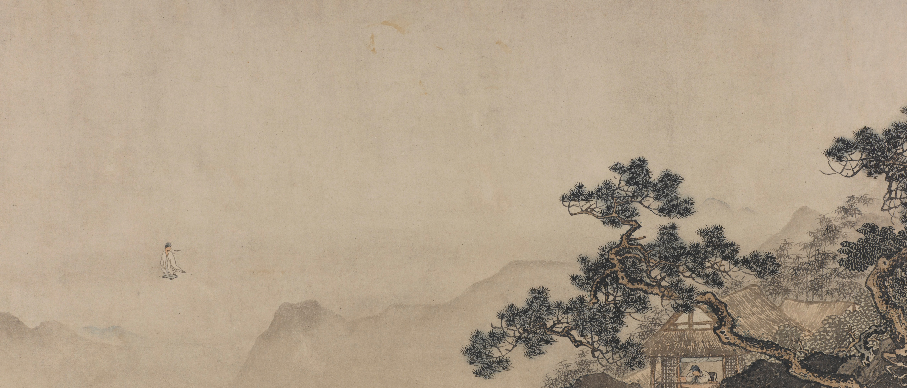

Chinese Scrolls in a timeline from Freer Gallery of Art and Arthur M. Sackler Gallery.
Source form Simthsonian Museum
Design by Zora Wan
With more than thirteen thousand objects dating from Neolithic times (circa 7000–circa 2000 BCE) to the present, the Freer and Sackler collections possess one of the finest museum holdings of Chinese art in the world. In addition to containing numerous masterworks, the collections reflect all major periods and materials of artistic production. Special strengths include remarkable ancient jades and bronzes, early Buddhist sculpture, imperial and trade ceramics, lacquer, classical paintings, and calligraphy, all of which are among the greatest treasures of Chinese art outside of China.
About Chinese Painting
Chinese painting (simplified Chinese: 中国画; traditional Chinese: 中國畫; pinyin: Zhōngguó huà) is one of the oldest continuous artistic traditions in the world. Painting in the traditional style is known today in Chinese as guó huà (simplified Chinese: 国画; traditional Chinese: 國畫), meaning "national painting" or "native painting", as opposed to Western styles of art which became popular in China in the 20th century. It is also called danqing (Chinese: 丹青; pinyin: dān qīng). Traditional painting involves essentially the same techniques as calligraphy and is done with a brush dipped in black ink or coloured pigments; oils are not used. As with calligraphy, the most popular materials on which paintings are made are paper and silk. The finished work can be mounted on scrolls, such as hanging scrolls or handscrolls. Traditional painting can also be done on album sheets, walls, lacquerware, folding screens, and other media.
- “Chinese painting” Wikipedia, Wikimedia Foundation, en.wikipedia.org/wiki/Chinese_painting.